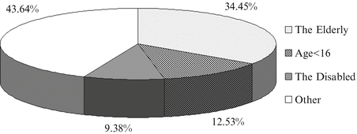
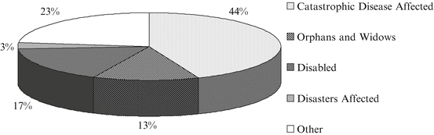

15.1 Introduction
In the past 30 years China has made significant progress in poverty reduction. According to the poverty line set by the World Bank (US$1.25/day per capita consumption or income), China’s urban poverty incidence dropped from 44.5 % in 1981 to 0.9 % in 2008, whereas the incidence of rural poverty dropped from 94.2 to 22.3 % during the same period (Chen 2010). According to China’s official poverty line, rural poverty was reduced from 250 million people affected in 1978 to 26.88 million people affected in 2010, with the overall incidence of poverty dropping from 30.7 to 2.8 %. Though data vary considerably based on different poverty lines, they all reflect a trend of substantial declines in poverty in China.
China’s poverty line has remained lower than the international standard. For instance in 2010, the rural poverty line was defined in terms of per capita annual net income at 1,274 yuan (US$193), which was equivalent to 21.5 % of the national average rural income of 5,919 yuan (US$896.82) (NBS 2011a). If converted into $US at the year-end exchange rate (US$1.0 = 6.6 yuan), the amount was about US$0.53/day per capita, which is equivalent to 42.3 % of the international poverty standard. The comparison shows that those rural residents who still live below China’s poverty line fall within the category of the extremely poor. The previous antipoverty policies in China have always targeted absolute poverty.
During the period of the 12th 5-year national socioeconomic development plan (2011–2015) and over the next decade the Chinese government will continue prioritizing the elimination of absolute poverty in its antipoverty strategies. The extremely poor areas that are adjacent to each other (especially areas inhabited by ethnic minorities, border areas, and ecologically delicate areas) will be the key regions for carrying out China’s antipoverty program through increasing poverty relief funds and gradually raising the poverty line (Fan 2011a). However, western China has experienced a slower pace in poverty reduction than eastern China, despite regional targeting antipoverty strategies that have been implemented since the 1980s. Among the current rural poor, nearly two-thirds are scattered across the western areas of the country (Fan 2011b), which indicates that in order to improve the effectiveness of antipoverty efforts the Chinese government should come up with more innovative poverty relief means and targeting mechanisms by taking into consideration the specific hardships faced by the extremely poor in western China.
In this paper, I focus on the following questions. First, in the last 30 years, especially during the period 2000–2010, what measures have been taken to alleviate poverty in rural China? Second, what new policies are being carried out in response to the most imperative living and development needs of extremely poor households and individuals? Third, what other crucial measures should be taken to help the extremely poor escape marginality and poverty? The main primary sources used in this chapter include policy documents from the central and local governments, rural poverty monitoring reports released by the National Bureau of Statistics (NBS) of China, existing research papers, and the results of field work that I conducted personally.
15.2 From Poverty Reduction Programs to Social Protection System
In its transition from a planned economy to a market economy, China has witnessed an accelerated process of industrialization and urbanization. In addition, due to the strict implementation of family planning (the one-child policy in particular), the problem of an aging population has come to the surface. Meanwhile the government and the public have developed a deepening understanding of the causes of poverty and adopted new ideas about social protection in the era of globalization (García and Gruat 2003). The goal of antipoverty policies has extended from guaranteeing the basic livelihood of the poor to reducing causes of poverty, with an emphasis on helping the underprivileged achieve their potential and take advantage of opportunities for self advancement. Such changes have not only prompted the adjustment of antipoverty strategies and policies according to socioeconomic development, but also facilitated the establishment of a social security system.
In this period of transition and development, social relief has become the main source of assistance to the poorest households and individuals. Under the planned economy during the period of the 1950–1970s, rural society was segregated from the urban sphere and lacked a social security system. The major programs responsible for social protection were the “social and disaster relief” and “five-guarantee” policies, the former providing temporary resources for the poor and the latter providing long-term resources and services.
The target groups of the five-guarantee policy include: the elderly, the disabled, and rural residents under 16 years of age who have no ability to work, no income to support their livelihood, and no legal guardians to take care of them. So far the categorization has not changed substantially in amendment of the policy (SCC 2006). The “five guarantees” refer to the provision of food and fuels, clothing and daily necessities, housing, medical care, and burial services for the target groups (the policy also guarantees educational expenses for target group children). The resources of the five-guarantees program, provided by the People’s Commune and production teams, could only support the most basic needs of poor households when poverty prevailed in the communes. Since the abolition of the People’s Commune in 1985, local governments have become the main administrators of the resources provided through the five-guarantees program, whereas village committees have remained responsible for caring for the households that enjoy program benefits. In 2010 the number of rural residents who received relief from the five-guarantee program reached 5.549 million beneficiaries (NBS 2011a).
The rural economic reform during 1978–1985 strongly promoted agricultural growth and thus enabled a majority of rural households to attain food security. However, in areas with insufficient resources and weak infrastructure, a considerable number of rural households did not benefit fully from economic growth and nearly 102 million people suffered from food shortages. To address this problem the central government initiated a nationwide antipoverty strategy in 1986 and clearly defined the goal of providing food and clothing for the poor through promoting development in poor areas (SCC 1989). By 1994 the goal of food security was virtually achieved. In the subsequent antipoverty schemes the central goal has been the elimination of income poverty. The key targets have expanded gradually from poor counties to poor towns and villages, and the main antipoverty measures so far have been carrying out socioeconomic and human resource development projects (CDRF 2007). However, these projects are economic growth oriented and those who have priority in acquiring investment opportunities are mostly the residents of predominantly poor areas who are not poor or else belong to the borderline poor. Therefore those who are able to get out of poverty first are usually not the poorest.
For the extremely poor, even those who have the ability to work, it is difficult to be granted the opportunities of the commodity production projects in the antipoverty schemes. For example in 2009, less than 3.0 % of the poor households that had members capable of working were granted antipoverty funds (NBS 2011b). Two major reasons have contributed to this inequality. One has to do with the existing social exclusion, in that those who are not poor have a greater voice than the poor in the distribution of antipoverty resources. The other reason has to do with the expectations for the projects of the administrative institutions. Given that the extremely poor are in an unfavorable position with regard to aspects of their living locations, access to information, open mindedness, health conditions, education levels, working skills, and management abilities; even if they were granted market oriented investment projects, they would suffer a much higher risk of failure than other groups. Therefore the limited participation of the extremely poor in antipoverty projects actually reflects their marginalized position.
Though the extremely poor find it hard to benefit directly from antipoverty projects, they have enjoyed an increasing amount of social relief. By 2008 China’s social relief system was made up of the following policy tools; “relief of basic living,” “special relief,” “preferential policies,” and “temporary relief.” “Relief of basic living” largely supports recipients with food and clothing. “Special relief” solves specific difficulties the recipients encounter in medical care, housing, education, and disasters. “Preferential policies” refer to the provision of public services free of charge or at reduced prices. “Temporary relief” is mainly responsible for hardships resulting from emergencies (MCA 2008). Among them the Minimum Livelihood Guarantee Scheme (Di Bao in Chinese) provides a social safety net for the extremely poor. A pilot program was launched in a few provinces and cities in 1996 and was later extended to rural areas nationwide in 2007. In principle the local governments provide subsidies with local funds for rural resident households whose per capita income is below the minimum living standard (the Di Bao line), in order to ensure that their basic needs are met (SCC 2007). In 2009 the Di Bao program beneficiaries received an average cash benefit of 816 yuan (US$123.64) per person annually (Table 15.1). Since 2011 urban and rural Di Bao standards have been linked to a price index to reduce the impacts of inflation on extremely poor households (CN 2011).
Table 15.1
A national statistical profile of the Di Bao program in China during the period 2001–2009 (NBS 2011c)
Year | Total number of rural people (millions) | Poverty line (Yuan/person/year) | Population in poverty (millions) | Average Di Bao line (Yuan/person/year) | Number of Di Bao participants (millions) | Di Bao participants/total rural population (%) | Average cash benefits (Yuan/person/year) |
|---|---|---|---|---|---|---|---|
2001 | 933.829 | 869 | 90.30 | – | 3.05 | 0.33 | – |
2002 | 935.025 | 872 | 86.45 | – | 4.08 | 0.44 | – |
2003 | 937.506 | 882 | 85.17 | – | 3.67 | 0.39 | – |
2004 | 942.537 | 924 | 75.87 | – | 4.88 | 0.52 | – |
2005 | 949.075 | 944 | 64.32 | – | 8.25 | 0.87 | – |
2006 | 933.913 | 958 | 56.98 | – | 15.93 | 1.71 | – |
2007 | 939.130 | 1,067 | 43.20 | 840.0 | 35.66 | 3.80 | 465.6 |
2008*
| 954.048 | 1,196 | 40.07 | 987.6 | 43.06 | 4.51 | 588.0 |
2009*
| 946.579 | 1,196 | 35.97 | 1,209.6 | 47.60 | 5.03 | 816.0 |
2010*
| 960.000 | 1,247 | 26.88 | 1,316.4 | 52.28 | 5.45 | – |
Several major factors have contributed to the enhanced role of social relief. First, the risks of poverty are increasing in an era featuring a market economy, globalization, climate change, and the subsequent food, energy, and financial crises. As a result there has been an increase of newly impoverished residents in areas that have lagged behind in developed areas, even though aggregate poverty rates have exhibited a declining trend over time. Moreover the newly poor households are spatially scattered and it is hard for antipoverty projects to reach all of them. Second, there are increasingly diverse causes of poverty, such as unexpected disasters, severe illnesses, disabilities, and the deaths of household income earners, each of which could drive an entire household into poverty. When there was an absence of a social insurance system or low payment of insurance benefits, social assistance proved to be a timely means of protection to relieve income shock on households.
In fact, the Chinese government has actively promoted the establishment and extension of the “New Type of Rural Cooperative Medical System” and the “New Type of Rural Old-age Security Scheme” initiatives during the 11th 5-year plan period (2006–2010) in order to address the problem of remarkable increases in poverty associated with illness and aging. By 2010 the Rural Cooperative Medical System covered 96.3 % of rural residents and in pilot regions (10 % of the counties nationwide) of the Rural Old-age Security Scheme the number of insured has reached 102.77 million. Among them, those over 60 years of age receive an allowance of 55 yuan (US$8.3) per month allocated from specific funds. There is no doubt that both policies help to reduce the risks of poverty.
With regard to the vision for 2020, the Chinese government has developed a plan to build a social protection system that would cover both urban and rural residents, with emphasis on the basic pension program, basic medical care, and the Di Bao (CPC 2006, 2007). It can be expected that these three schemes and the ongoing antipoverty policies will provide more opportunities for the poor who currently have jobs, who are unable to work, and other vulnerable groups to escape poverty and marginality.
15.3 Coordination Among Di Bao, Public Services, and Social Insurance Policies: Institutional Innovations in Developed Areas
According to the Di Bao program “Notification on the Establishment of Nationwide Rural Minimum Livelihood Guarantee Scheme” enacted by the State Council in 2007, “the target group of the Di Bao program includes rural residents whose net annual household per capita income is below the local Di Bao line, mainly rural residents who have been in poverty for many years due to illness, handicap, old age, physical weakness, the loss of working ability, and adverse living conditions.” This means that people covered by the Di Bao program are likely those living in extreme poverty. Thus it can be deduced that the Di Bao line should not be higher than the poverty line and that the number of Di Bao participants should be at most equivalent to size of the population living in poverty. However, Table 15.1 presents data that suggest that since 2008 the number of Di Bao participants has been larger than the size of the poor population. Since 2009 the Di Bao line has been higher than the official poverty line. In 2010 the number of Di Bao participants was larger than the population in poverty by 94.5 %, and the Di Bao line has been 5.6 % higher than the official poverty line. How can this puzzle be explained?
First, the statistics for each group come from different sources. The official poverty line is defined by China’s central government. Based on the official poverty line, the NBS estimates the size of the population living in poverty using a national rural survey sample. The Di Bao line is defined by local governments above the county-level, with a similar formula to the one used for the calculation of the official poverty line, but that can be adjusted to reflect local circumstances of socioeconomic development. According to the latest guidance from the Ministry of Civil Affairs (MCA), the Di Bao line should include essential food and nonfood spending of rural residents for subsistence purposes for a year (clothing, water, electricity, coal or gas, public transport, daily necessities, etc.) (MCA 2011). Due to significant regional disparities the Di Bao line is considerably higher in developed regions, so that the average level of regional Di Bao lines is leveraged over the national poverty line and the number of the Di Bao participants is larger than that of the poor.
Secondly, the formation of the Di Bao line and the implementation of the Di Bao policy are highly decentralized. Local governments, village committees, and villagers all have a certain level of discretion regarding the identification of recipients. As a result the actual coverage of the Di Bao program may not satisfy both conditions at the same time: family income lower than the Di Bao line and special personal difficulties. For instance, although for some families their income is higher than the national poverty line or the Di Bao line, their family financial status is insolvent due to spending on the costs of childhood education or serious illness. Commonly villagers and village committees decide that Di Bao benefits be granted to this type of family. Statistically, the increase of Di Bao participants outpaced the decrease of the poor.
In the actual implementation of the Di Bao policy, the various localities observe the same procedure defined by the State Council, particularly the requirement for village committees and villagers to take part in decision making. According to the procedure villagers first submit a Di Bao application to a village committee to organize either a villagers’ representative meeting or a formal meeting to assess the financial status of the applicant. After assessment the applications are submitted to the local township government. Township civil officers are responsible for verifying the household property, income, work ability, and the actual living conditions of the applicants, and then submit the results to county-level civil affairs bureaus for approval. In order to ensure a fair and transparent decision-making process, village committees, township governments, and county civil affairs bureaus make the application, assessment, review, and approval information public through local media and community notice boards.
This decision-making process leaves room for local governments and village committees to engage in institutional innovation according to local conditions. In developed regions with rapid rates of industrialization and urbanization, local authorities developed an integrated urban and rural Di Bao system. Urban and rural residents must follow the same procedures to apply for and obtain Di Bao benefits, and the only difference lies in the Di Bao line and amount of the allowance. All families eligible for Di Bao benefits are covered by the Di Bao system. However, the Di Bao program targets individuals who are in the greatest difficulty, such as the aged, handicapped, and seriously ill. Recipients at different levels of poverty severity are entitled to different financial benefit amounts. In identifying the level of assistance according to the socioeconomic and demographic features of the beneficiaries, local governments do not have a standardized income threshold for Di Bao. Instead some parameters have been included in a threshold determination. For instance, the provincial government in Jiangsu has issued Di Bao guidance lines for the prefectures within that province with disparate levels of development. The provincial finance provides part of the Di Bao fund to the prefectures below the average level of provincial development. In practice, this adds a regional parameter to the Di Bao line.
In the implementation of assistance at the municipal and county government levels, other parameters related to household size and individual characteristics have been included. For instance, the Zhangjiagang municipal government delivers allowances that are equivalent to 140 % of the Di Bao line to the five-guarantee households (or “Wu Bao Hu,” the rural poor who are infirm, widowed, childless, orphaned, or have lost the capacity to work). An additional 10 % of the full Di Bao allowance will be delivered to the following four target groups: (1) the elderly aged 70 years or older, (2) the ill with malignant tumors, kidney transplants, uremia, and leukemia, (3) the handicapped with a certificate of disability, (4) the single member households. Moreover, an additional 20 % of the full Di Bao allowance will be delivered to the two types of target groups other than the five-guarantee households: recipients without any income source, work capacity, legal support, foster parent, or support provider, and the blind and/or seriously handicapped with a certificate of disability (Hong et al. 2006).
Since its inception the Di Bao system has been supported by public service and social insurance policies. Aside from monthly allowances, the target groups can also access related policy preferences. The allowances and other social benefits have been raised along with the increasing local finance revenue and average resident income. In January 2011 I visited a Di Bao recipient in the village of Xibang, in Tongxiang county of the province of Zhejiang. There were four members from three generations in the household. Mr. Jia, the household head, was deaf and his wife was congenitally retarded. Ten years ago Mr. Jia received a monthly allowance of 150 yuan (US$22.72). Since 2009 his monthly allowance had been increased to 630 yuan (US$95.45). Printed on his Di Bao certificate were other preferential treatments offered by the county government. Usually the cash value represented by these assistance policies is far higher than the amount of Di Bao allowance received by target group recipients. Benefits received by Mr. Jia included:
- A monthly allowance
- Free access to 9-year compulsory education and entitlement to an educational coupon for high school and vocational school
- Free access to a cooperative medical program and exemption of hospital registration fees
- Access to financial assistance for those affected by serious illness
- Free access to vocational training and employment placement services
- Exemption of commercial administrative fees for a family-operated business
- Entitlement to legal assistance.
In order to prevent extreme poverty among households whose income is only slightly higher than Di Bao line, some local governments have identified a special group of “Di Bao fringe households” (the marginal poor), which includes households with per capita income of up to twice the level of the Di Bao line and that have seriously ill or handicapped family members. These households can also access social protection that combines relief with public services. In January 2010 I visited a Di Bao household in the town of Shajiabang near the city of Changshu in the Jiangsu province. Both daughters of the family were married. The parents had worked in a township enterprise and were both pension recipients. Ms. Xu (58 years old) suffered kidney disease and needed regular dialysis. Due to her serious illness she was identified as belonging to one of the marginal target groups of Di Bao. In 2008 she received a monthly allowance of 116.2 yuan (US$17.61). In 2009 the allowance was increased by to 126.2 yuan (US$19.12) per month. According to the medical bills shown by Ms. Xu, her dialysis treatments cost 1,600–2,000 yuan (US$242.42–303.03) per visit. By the end of 2009 her cumulative annual medical bills amounted to 41,981.78 yuan (US$6,360.76), of which 47.7 % (20,025.92 yuan or US$3,034.23) were paid by a cooperative medical fund, and 31.2 % (13,111.29 yuan or US$1,986.56) were paid by the medical relief fund for those affected by serious illness. These medical relief payments were equivalent to 8.6 times the total of her annual Di Bao allowances (1,514.4 yuan or US$229.45). In 2009 the premium for participating in the cooperative medical care scheme in the city of Changshu amounted to 300 yuan (US$45.45) per capita, of which 80 yuan (US$12.12) comes from individual contributions, while the rest was divided among municipal/township and village finances. Under this funding level the average reimbursement ratio for the hospitalized was 45 %, but Ms. Xu’s actual reimbursement ratio was almost 80 %, reflecting the significant benefits from the social safety net.
Local governments conduct a re-identification of Di Bao recipients once a year. The purpose of this effort is to include newly impoverished households into protection, adjust assistance levels, and exclude those who have escaped poverty, although in reality very few people are excluded from protection. This suggests that the majority of those who are covered by the Di Bao program are chronically poor (Ravallion 2010). At the local level an assistance policy has been practiced to encourage recipients who are of working age and have the ability to work their way out of poverty through increased employment. If a recipient declines a job introduction for public employment in a service institution three times, the amount of their allowance will be reduced and ultimately canceled. For households whose per capita income has stayed above the Di Bao line due to increased employment, a Di Bao allowance of 3–6 months will be retained before withdrawal from the program (Xinhuanet 2008).
At the county level or above, social relief, public service, and social insurance are the responsibilities of different governmental departments. Coordination of multiple programs for recipients is achieved through information sharing among the departments, the extension of financial services to townships and villages, and computer networks. After recipients are approved by the civil affairs bureau, the names and family information will be transmitted to the other civil affairs bureaus for finance, education, health care, employment, and social insurance. Benefits in cash or services that these departments are authorized to deliver will be allocated according to the names listed for each household. All cash transactions are supported by a banking service, permitting allowances to be distributed directly to the recipients account through monthly bank transfers. This has greatly benefited recipient families and made financial supervision easier.
It should be noted that the above mentioned institutional arrangements in the developed regions only target residents who have local permanent residential registration status (hukou). The nonlocal residents (such as rural migrant workers) and their families have not had the same access to public services and social protection as permanent local residents. This phenomenon of the social exclusion of migratory populations is a pressing problem of urbanization that needs to be resolved.
15.4 Linking Di Bao with Nongovernmental Assistance and Poverty Reduction Programs: Challenges in Poor Areas
After having been initially confined to a few developed regions, the rural Di Bao program was expanded throughout China in 2007. So far this program still faces great implementation challenges in poor areas of China’s central and western regions. The biggest problems are the large size of the poor population and limited local finances. Despite special financial support from the central government, there is still a considerable part of the poor population that is not covered by the Di Bao program. In addition, Di Bao allowances are low and play a very limited role in improving the well-being and development of extremely poor recipients.
First, local financial capability has become the dominant criterion for initiating the Di Bao target identification process. According to the amount of available finances, provincial governments first identify the proportion of coverable Di Bao target group recipients of the total rural population (Di Bao ratio) and then break down the value of this indicator to different administrative areas. These breakdown quantities are further divided by county and township governments and are finally converted to individual quotas for villages. In this respect Di Bao coverage is largely dependent on local government allocation of financial resources, rather than the actual scope of the population below the Di Bao line. For instance in 2007 the Qinghai provincial government identified a rural Di Bao ratio equivalent to 6–7 % of the population. In the Guoluo prefecture, which is located on a plateau at 4,200 m above sea level, poverty incidence was as high as 12.5 %, but the approved Di Bao ratio was only equivalent to 10 % of the population (Ding 2010).
Second, with given Di Bao quotas, village committees usually identify the poorest families based on their own ranking of poverty according to family property and labor status. Then they present a public notice with a list of Di Bao candidate’s names, including the seriously ill, handicapped, or aged. This practice apparently departs from official protocol, but has been popular among villagers because the official Di Bao line is only based on per capita income at certain points in time. The villagers’ perception of poverty is based on the long-term earning capacity of farm households. Moreover, for village committees the costs of conducting an income survey of all individual farm households precludes such an alternative. Taking advantage of societal familiarity and participatory appraisal is undoubtedly an option of socioeconomic rationality. When the number of local poor households exceeds Di Bao recipient quotas, village committees prefer to identify individuals that are the neediest rather than entire households. This actually increases Di Bao coverage at the village level by reducing household allowances. Moreover, evenly sharing resources is a tradition of rural grassroots society and therefore the determination of recipients through village committees is easily recognized and accepted among villagers.
Against this backdrop the assessment of Di Bao targeting accuracy based on the present sample survey statistics could deviate from reality, but this approach helps researchers assess the socioeconomic impacts of the program through understanding the characteristics of Di Bao recipients. The national rural poverty monitoring sample surveys conducted by the NBS are just such an authoritative avenue of procuring information. This long-term annual survey effort has been conducted in 592 key poor counties across central and western China. In 2009 the survey sample consisted of 5,400 villages, 53,270 farm households, and 225,298 people. Survey results indicated that 5.3 % of the total sample population had an income level below county level Di Bao lines, while 9.6 % received Di Bao allowances that year. It seems that the Di Bao program can cover all qualified candidates, but in reality only 12.2 % of the eligible candidates received Di Bao allowances. It should be noted that among sample households that had Di Bao recipients, about 7.5 % were households with relatively large businesses or farming operations and 5.9 % had family members that were village cadres (Wu 2011), indicating that even within the narrow coverage of Di Bao there was welfare leakage.
As for demographics, most Di Bao recipients are the aged, handicapped, or under-aged. Among Di Bao recipients in the key poor counties, the above-mentioned three groups accounted for a total of 55.6 % of the program beneficiaries. According to MCA statistics this ratio was 56.4 % for China’s rural Di Bao recipients (Fig. 15.1). In 2011 a Beijing Normal University task force conducted a five-province rural survey in Anhui, Fujian, Jiangxi, Henan, and Shaanxi that found that the disabled accounted for about 43.8 % of Di Bao recipients (Zhang 2011). Despite different standards and methods across regions regarding the selection of Di Bao recipients, the results were similar. This means that when village grassroots cadres and villagers made adjustments to the Di Bao poverty line, they focused on the causes of household and individual difficulty. Hence these adjustments are helpful for targeting those that face real need. In fact when local civil affairs bureaus approve a Di Bao recipient’s eligibility the most common benchmark is justification due to poverty. In Suichuan county in the Jiangxi province (one of the key poor counties) natural disasters are also contributors to transient poverty (Fig. 15.2).

Fig. 15.1
Composition of Di Bao recipients in rural China at the end of 2009 (MCA 2010)

Fig. 15.2
Composition of Di Bao recipients in Suichuan County, Jiangxi Province of China in 2008 (Wu 2011)
In 2009 the average annual net income of rural Chinese households reached 5,153 yuan (US$780.76) per capita. With this reference the statistics presented in Table 15.2 can be explained as follows. First, the per capita net income of rural households in the key poor counties amounted to roughly 2,842 yuan (US$430.61), which is not yet above the poverty line set by the World Bank, but represents 55.2 % of the national average income. The per capita income levels of registered poor, Di Bao, and lowest-income households were 50.5, 46.8, and 20.8 % of the national average respectively. Second, since 2004 public transfer funds for farmers have increased rapidly. In the calculations for the values presented in Table 15.2, ten types of public transfer funds were included, such as agricultural production subsidies, Di Bao allowance, subsidies for returning farmland to forest, the disaster relief and assistance fund, etc. For farm households in the key poor counties public transfer funds have become their third largest source of income. They account for 11.6–17.6 % of the net per capita income of low-income groups. Third, among all types of farm households Di Bao households get the largest share of public transfer funds. Public transfer funds for Di Bao households were equivalent to 1.77 times the average level of the total sample and 3.44 times the lowest income group. The reason for this is that both agricultural and rural development policies provide preferential treatments to Di Bao households. Di Bao eligibility has already become a symbol that attracts social attention and public support.
Table 15.2
Composition of per capita annual net income of rural households in the state designated key poor counties in 2009 (aggregate data provided by the NBS rural poverty monitoring sample survey conducted in 2009)
Income source | Total sample | Registered poor households |
Di Bao participating households | Bottom decile income group | ||||
|---|---|---|---|---|---|---|---|---|
n = 53,270 | n = 10,015 | n = 5,859 | n = 5,327 | |||||
Amount (Yuan) | Share (%) | Amount (Yuan) | Share (%) | Amount (Yuan) | Share (%) | Amount (Yuan) | Share (%) | |
Per capita annual net income | 2,842.1 | 100 | 2,600.0 | 100 | 2,408.5 | 100 | 1,068.7 | 100 |
Wages | 1,011.2 | 35.58 | 833.8 | 32.07 | 630.2 | 26.17 | 325.0 | 30.41 |
Family-run economy | 1,522.4 | 53.57 | 1,392.2 | 53.55 | 1,291.9 | 53.64 | 602.0 | 56.33 |
Returns to assets | 40.4 | 1.42 | 38.4 | 1.48 | 32.6 | 1.35 | 9.1 | 0.85 |
Private transfer | 29.3 | 1.03 | 27.6 | 1.06 | 29.8 | 1.24 | 9.1 | 0.86 |
Reimburse to medical expense | 10.5 | 0.37 | 11.8 | 0.45 | 10.7 | 0.44 | 1.5 | 0.14 |
Di Bao cash benefits | 19.3 | 0.68 | 53.4 | 2.05 | 162.1 | 6.73 | 24.1 | 2.26 |
Other public transfer | 209.0 | 7.35 | 242.8 | 9.34 | 251.2 | 10.43 | 97.9 | 9.15 |
Public support for the extremely poor in poor areas is far from sufficient. The statistics presented in Table 15.2 indicate that farm households receive meager amounts of Di Bao funds. Even Di Bao households only receive a per capita monthly allowance of 13.5 yuan (US$2.05). Private transfer income accounts for around 1.0 % of the net income of farm households. The relatives and friends of the poor are usually poor as well, and mutual cash donations and in-kind assistance are both limited, although labor assistance from relatives and neighbors are not included in the statistics. During the field work conducted in the Qinghai-Tibetan plateau in 2007, I observed that most of the Di Bao recipients spent their allowance on food. They relied partly upon medical assistance to resolve difficulties regarding access to health care. Community members took part in assisting disabled Di Bao recipients (including five-guarantee households) to maintain daily activities and social interactions. Assistance from monasteries makes sure that the locally recognized poor not only receive material aid, but psychological comfort as well. Private assistance and social assistance went hand-in-hand for the same target groups; however, this type of private assistance is not an institutionalized and regular activity. Despite contributing to the subsistence of the poor, it cannot eliminate developmental barriers for the recipients and help them escape poverty and marginality.
China’s poverty reduction policies have always featured poverty elimination through development. In key poor counties a special poverty reduction fund appropriated by the central government is a major source of income for county governments. Hence in the process of expanding the Di Bao program from the urban to the rural sector, the Chinese government has attempted to link Di Bao with poverty reduction policies. In 2008 and 2010 the State Council clearly identified the target groups of the Di Bao program and poverty reduction policies in the pilot work documents. The target group of the poverty reduction policies was defined as “rural residents whose annual per capita family net income is below the rural poverty line and who have working capacity or the willingness to work, including rural Di Bao recipients” (SCC 2010). The problem is that the combination of the two programs has not been achieved because there were no substantial changes to the regional targeting mechanisms of the poverty reduction program and the government departments in charge of the different programs do not use the same information platform. It does not matter whether beneficiaries are former Di Bao recipients who have the capacity to work or poor households that withdrew from the Di Bao program, neither have received the expected poverty reduction support (Wu 2011).
Drawing upon policy coordination experiences of developed regions, the following approaches can be attempted in poor areas:
- First, treat the extremely poor, general poor, and marginal poor people as an “axis” of connection among the various public support programs.
- Second, establish an information sharing system. In developed provinces the databases of poor households and individuals in the civil affairs bureaus system provide an information platform for all government departments and public service institutions. Using this platform various agencies exchange data and share information. This system certainly saves organizational costs and enhances poverty reduction intensity. In poor areas the existing database of registered poor households could be used as a foundation to further build an adequate information platform.
- Third, expand existing poverty reduction programs to individual households. For the extremely poor households and individuals, access to socioeconomic development is deprived due to difficulties with access to road networks, electrical power, telecommunications, drinking water, housing, sanitary equipment, education, medical care, technological extension, and financial and information services. There used to be poverty reduction projects in all of these sectors, but they often targeted service providers rather than households and individuals. Even for programs that target households, most investment avenues require matching funds from the households. The extremely poor cannot provide matching funds and therefore they are usually excluded (Cao et al. 2011). These problems are not addressed in the implementation of the Di Bao program. Hence the key to improving the social benefits of poverty reduction programs and linking poverty reduction programs with the Di Bao system lies with changing the targeting mechanisms and investment approaches of poverty reduction programs.
- Fourth, expand the intervention areas of poverty reduction policies. The Di Bao program only provides subsistence guarantees to the extremely poor. The food security objective of poverty reduction policy emphasizes freeing the poor from hunger. In order to prevent the intergenerational transmission of poverty it is important to start with nutritional interventions for women during pregnancy and nursing infants, as well as for children. Some nongovernmental organizations have already achieved successful outcomes with childhood nutritional interventions (CDRF 2011). The government needs to establish long-term intervention programs in order to extend these experiences to all poor regions.
- Fifth, increase project management funding. China’s central government has launched a series of new long-term programs for social relief, social insurance, public service, and poverty reduction. Project funds have also been allocated to key poor counties, however, these special transfer funds generally do not include any support for program management. The local budgets of all of the key poor counties run on deficits. In order to maintain project operations the managerial agencies either appropriate funds from other sources or charge the recipients for assistance rather than providing it for free. In addition, it is common to see inadequate project management because better management would cost more (Zhu 2006). Successful experiences in developed regions show that intensive management is needed for projects in order to target the specific difficulties of extremely poor households and individuals. In order to improve the efficiency of social assistance it is imperative for the central and provincial governments to allocate increased project management funds to the poor counties.
15.5 Summary
China has developed its rural social protection system during a process of socioeconomic transformation. Relevant policies stress the following key points. First, they intend to ensure the subsistence of the poor. Second, they intend to mitigate poverty-inducing risks. Third, they intend to help poor households develop their own labor potential, take advantage of development opportunities, and get their families out of poverty.
In developed regions the Di Bao social assistance program, social insurance, and public services appear to have effectively mitigated the difficulties of the extremely poor. In relation to this, children from poor and marginal poor families have been guaranteed access to education and health care. Family members with the capacity to work receive free vocational training and employment support. These comprehensive policy interventions and intensive social investment programs tend to help recipient families escape poverty traps and prevent intergenerational poverty transmission. Sound targeting mechanisms and delicate project management are prerequisites for the interventions to achieve significant effects. It should be noted that rural migrant workers and their families have failed to receive the same policy treatment as local permanent residents.
In poor areas there are significant difficulties in fighting extreme poverty and marginality. First, the size of the extremely poor population is large, but locally available financial resources are very limited, and as a result the intensity is inadequate despite the implementation of comprehensive poverty interventions. Second, the issue of linkage building between the Di Bao program and other poverty reduction programs has been put on the agenda, but this policy objective has not yet been achieved. The reason for this is the lack of coordination between program administration institutions, different targeting mechanisms, and different information platforms. Third, insufficient coverage and welfare leakage exist in both programs.
Increasing the effectiveness of poverty reduction efforts in poor areas is and will continue to be the key to the eradication of extreme poverty in China, but will require a number of changes. First, increasing the transfer of the Di Bao fund from the central government to local governments in poor areas would help provide subsistence security to all extremely poor households and individuals. Second, while implementing comprehensive interventions on economic risks encountered by the extremely poor, the government and public should also take actions to eliminate social exclusion. This may not bring any significant changes in poverty incidence in the short-term, but is an essential step to eradicate poverty and promote inclusive development over the long term. For this reason it is necessary to make adjustments to the indicators used to assess local government efforts. A shift should be made from over-attention on changes in the incidence of poverty to an increasing consideration of how much the poor are benefited from multi-dimensional intervention policies.
Acknowledgements
I appreciate the commentary and information contributions from Zhongyi Jiang, Guobao Wu, and Xiulan Zhang, as well as for the illustrations by Chengwu Jin and Wei He.
References
Cao H, Wang X et al (2011) Multi-dimensional poverty measurement and intervention for special types of poor areas—case studies on Aba Tibetan and Qiang autonomous prefecture in Sichuan Province. Agricultural Press of China, Beijing
CDRF (2007) China development report 2007: eliminating poverty through development. China Development Publishing House, Beijing
CDRF (2011) Boarding primary school nutrition improvement plan. China Development Research Foundation, Beijing. http://211.144.32.61/project/project.php?cid=18&subcid=869&aid=2299. Accessed 12 June 2011
Chen S (2010) Monitoring China’s progress against poverty and evaluating its anti-poverty policies. Paper presented at the CASS Forum, Social Protection and Human Development in the Era of Post-Financial Crisis, Beijing, 22–24 October 2010
China News (2011) China established dynamic urban and rural minimum livelihood guarantee scheme linked to price index. http://www.chinanews.com/gn/2011/05-18/3049913.shtml. Accessed 12 May 2011
CPC (2006) Communiqué of the Sixth Plenum of the 16th CPC Central Committee. http://news.xinhuanet.com/politics/2006-10/11/content_5190605.htm. Accessed 12 May 2010
CPC (2007) Report to the seventeenth National Congress of the Communist Party of China. http://news.xinhuanet.com/newscenter/2007-10/24/content_6938568_7.htm. Accessed 15 Oct 2007
Ding S (2010) Social relief and non-governmental assistance in rural Tibetan inhabited areas. In: Wang L, Zhu L (eds) How to get out of the poverty trap. Economic Management Press, Beijing
Fan X (2011a) China strives to eliminate absolute poverty in ten years. Hong Kong Commercial Daily. http://www.cpad.gov.cn/data/2011/0121/article_343820.htm. Accessed 13 Apr 2011
Fan X (2011b) Make contiguous extremely poor areas the main battlefield of anti-poverty efforts. http://www.cpad.gov.cn/data/2011/0307/article_343991.htm. Accessed 13 Apr 2011
García AB, Gruat JV (2003) Social protection: a life cycle continuum investment for social justice, poverty reduction and development. Social Protection Sector, International Labour Organization, Geneva. http://www.ilo.org/public/english/protection/download/lifecycl/lifecycle.pdf. Accessed 10 Nov 2009
Hong D, Wang H, Li M, Wan H (2006) Guidance and establishment of rural Dibao program compatible with economic development level—report on rural Di Bao survey in Jiangsu Province. Minimum Livelihood Security Department, Ministry of Civil Affairs, Asia Development Bank, Beijing
MCA (2008) General research report of social relief system. Department of Social Relief, Ministry of Civil Affairs, Beijing
MCA (2010) The composition of Di Bao participants in rural China in December 2009. Ministry of Civil Affairs, Beijing. http://files.mca.gov.cn/cws/201001/20100128094132409.htm. Accessed 10 May 2011
MCA (2011) Notification on further regulation of urban and rural minimum livelihood standards, MCA issue 80. Ministry of Civil Affairs, Beijing. http//www.mca.gov.cn/article/zwgk/fvfg/zdshbz/201105/20110500154356.shtml. Accessed May 2011
NBS (2011a) Statistical Communiqué of the People’s Republic of China on the 2010 national economic and social development. National Bureau of Statistics, Beijing. http//www.stats.gov.cn/tjgb/ndtjgb/qgndtjgb/t20110228_402705692.htm. Accessed10 May 2011
NBS (2011b) The poverty monitoring report of rural China 2010. NBS division of rural socioeconomic survey. China Statistics Press, Beijing
NBS (2011c) Unpublished data provided at a meeting about the poverty dynamics organized by the Poverty Reduction Office under the State Council, Beijing, 26 November 2010
Ravallion M (2010) A guaranteed minimum income? Theory and evidence on China’s Di Bao program. Paper presented at the CASS Forum, Social Protection and Human Development in the Era of Post-Financial Crisis, Beijing, 22–24 October 2010
SCC (1989) Poverty reduction office under the state council, a compilation of documents on economic development in rural areas. State Council of China, Beijing
SCC (2006) The regulations for rural five-guarantee work, order 456 of the State Council of the People’s Republic of China. State Council of China, Beijing. http//www.gov.cn/zwgk/2006-01/26/content_172438.htm. Accessed 10 May 2011
SCC (2007) Notification on the establishment of nationwide rural minimum livelihood guarantee scheme. State Council of China, Beijing. http//www.gov.cn/zwgk/2007-08/14/content_716621. htm. Accessed 10 May 2011
SCC (2010) Notification on scaling-up the experiment on linking rural Di Bao program with poverty reduction developmental policies. State Council General Office issue 31, State Council of China, Beijing. http://www.gov.cn/zwgk/2010-05/11/content_1603979.htm. Accessed 10 May 2011
Wu G (2011) A study on the linkage between rural Di Bao program and developmental poverty reduction policies, a research paper submitted for the State Council Poverty Reduction Office. State Council of China, Beijing (unpublished)
Xinhuanet (2008) Xinhuanet.com Jiangsu channel: Suzhou’s social relief expansion picks up speed, cancellation of assistance to those no longer in need. http://www.js.xinhuanet.com/suzhou/2008-04/17/content_13000765.htm. Accessed 12 June 2011
Zhang X (2011) Strengthening the antipoverty effects of social assistance in China. Presentation prepared for Asian Development Bank (unpublished)
Zhu L (2006) Management cost and efficiency of Rural Medical Assistance Program. China Demogr Sci 4:16–27